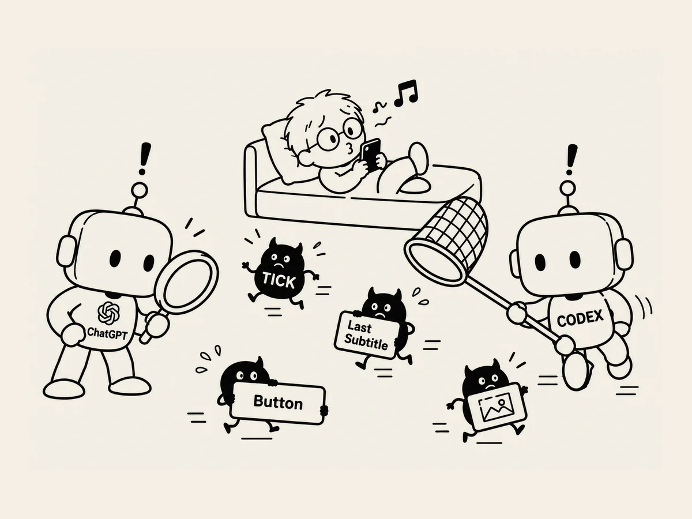

25.
Is AI Hunting the Devil?
There was one saying that took on a new meaning while I was building websites.
"The devil is in the details."
The big things get done quickly.
Build the screen.
Make the music play.
Make the buttons.
It sounds simple when you say it.
But just when you think you're almost finished, little problems start popping up one by one.
There's a tiny tick sound.
The final subtitle doesn't appear.
A button is hard to see.
When I was building my first website, I looked into every one of these problems myself.
The second time, I worked a little differently.
I told ChatGPT,
"Make instructions for checking the entire site from beginning to end, following the same path a user would take."
ChatGPT made the instructions.
I gave them to Codex.
Codex checked the site.
A problem appeared.
It fixed it.
I showed the result to ChatGPT again.
Another check.
Back to Codex.
Chat → Codex → Check → Back to Chat.
Loop.
Another loop.
After a few rounds, the problems started disappearing one by one.
Of course, this didn't eliminate every problem.
Some things could only be found by actually pressing buttons and listening on my phone myself.
Still, it was different from before.
The work I used to inspect one piece at a time myself was now being passed back and forth between AIs, and they were starting to catch the problems.
They say the devil is in the details.
And if AI catches the details...
Is AI hunting the devil?
